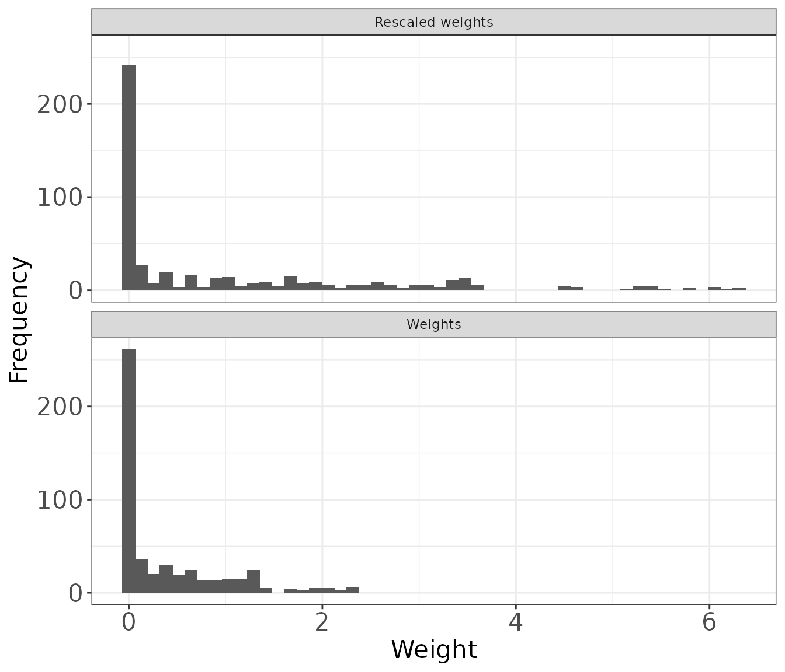
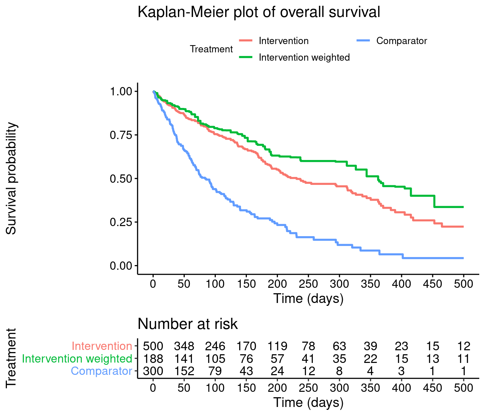
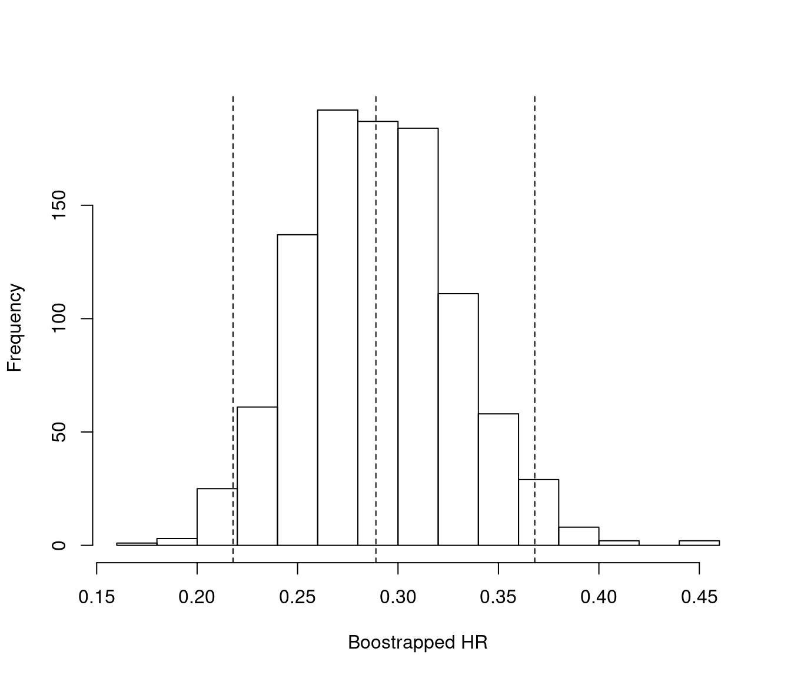
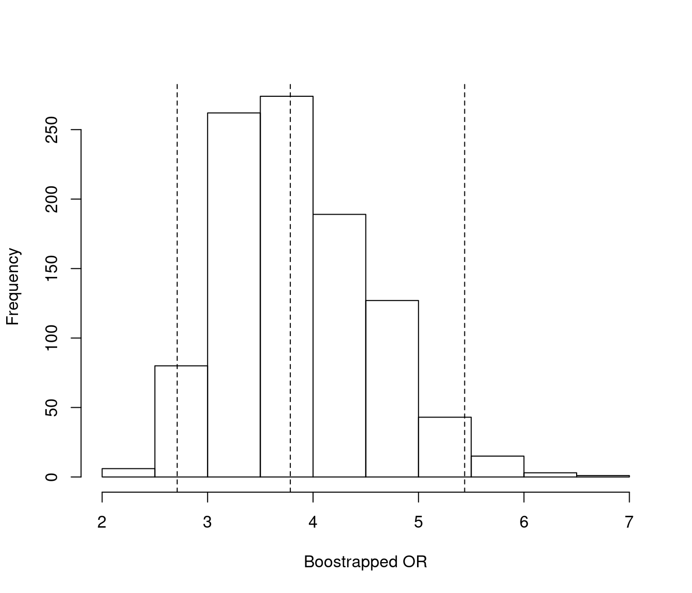

MAIC.RmdThis document describes the steps required to perform a matching-adjusted indirect comparison (MAIC) analysis using the MAIC package in R for a disconnected treatment network where the endpoint of interest is either time-to-event (e.g. overall survival) or binary (e.g. objective tumor response).
The methods described in this document are based on those originally described by Signorovitch et al. 2012 and described in the National Institute for Health and Care Excellence (NICE) Decision Support Unit (DSU) Technical Support Document (TSD) 18.[1,2]
MAIC methods are often required when:
The premise of MAIC methods is to adjust for between-trial differences in patient demographic or disease characteristics at baseline. When a common treatment comparator or ‘linked network’ are unavailable, a MAIC assumes that differences between absolute outcomes that would be observed in each trial are entirely explained by imbalances in prognostic variables and treatment effect modifiers. Prognostic variables are those that are predictive of disease outcomes, independent of the treatment received. For example, older patients may have increased risk of death compared to younger patients. Treatment effect modifiers are those variables that influence the relative effect of one treatment compared to another. For example patients with a better performance status may experience a larger treatment benefit than those with a worse performance status. Under this assumption, every prognostic variable and every treatment effect modifier that is imbalanced between the two studies must be available. This assumption is generally considered very difficult to meet.[2] There are several ways of identifying prognostic variables/treatment effect modifiers to be used in the MAIC analyses, some of which include:
For the purposes of this example, we present an unanchored MAIC of two treatments in lung cancer with the treatments being compared labelled ‘intervention’ and ‘comparator’. The two endpoints being compared are overall survival (a time to event outcome) and objective response (a binary outcome). The data used in this example have been simulated to resemble that of clinical trial data. The data available are:
In this example scenario, age, sex, the Eastern Cooperative Oncology Group performance status (ECOG PS) and smoking status have been identified as imbalanced prognostic variables/treatment effect modifiers.
To perform unanchored MAICs, the following data is required:
Simulated data for the above is provided with the MAIC package.
This example reads in and combines data from three standard simulated data sets (adsl, adrs and adtte) which are saved as ‘.csv’ files. The data may need some manipulation to standardize the variable names to ensure they are the same in all datasets.
The variables needed for the time to event analyses are:
The variables needed for the binary event analyses are:
For the matching variables:
#### Intervention data # Read in ADaM data and rename variables of interest adsl <- read.csv(system.file("extdata", "adsl.csv", package = "MAIC", mustWork = TRUE)) adrs <- read.csv(system.file("extdata", "adrs.csv", package = "MAIC", mustWork = TRUE)) adtte <- read.csv(system.file("extdata", "adtte.csv", package = "MAIC", mustWork = TRUE)) adsl <- adsl %>% # Data containing the matching variables mutate(SEX=ifelse(SEX=="Male", 1, 0)) # Coded 1 for males and 0 for females adrs <- adrs %>% # Response data filter(PARAM=="Response") %>% transmute(USUBJID, ARM, response=AVAL) adtte <- adtte %>% # Time to event data (overall survival) filter(PARAMCD=="OS") %>% mutate(Event=1-CNSR) %>% #Set up coding as Event = 1, Censor = 0 transmute(USUBJID, ARM, Time=AVAL, Event) # Combine all intervention data intervention_input <- adsl %>% full_join(adrs, by=c("USUBJID", "ARM")) %>% full_join(adtte, by=c("USUBJID", "ARM")) head(intervention_input) #> USUBJID ARM AGE SEX SMOKE ECOG0 response Time Event #> 1 1 A 45 1 0 0 0 281.5195 0 #> 2 2 A 71 1 0 0 1 500.0000 0 #> 3 3 A 58 1 1 1 1 304.6406 0 #> 4 4 A 48 0 0 1 1 102.4731 0 #> 5 5 A 69 1 0 1 0 101.6632 0 #> 6 6 A 48 0 0 1 0 237.0593 1 # List out matching covariates match_cov <- c("AGE", "SEX", "SMOKE", "ECOG0")
The aggregate baseline characteristics (number of patients, mean and SD for continuous variables and proportion for binary variables) from the comparator trial are needed as a data frame. Naming of the covariates in this data frame (named below as target_pop_standard) should be consistent with the intervention data (intervention_input).
# Baseline aggregate data for the comparator population target_pop <- read.csv(system.file("extdata", "Aggregate data.csv", package = "MAIC", mustWork = TRUE)) # Renames target population cols to be consistent with match_cov match_cov #> [1] "AGE" "SEX" "SMOKE" "ECOG0" names(target_pop) #> [1] "N" "age.mean" "age.sd" "N.male" "prop.male" #> [6] "N.ecog0" "prop.ecog0" "N.smoke" "prop.smoke" "ARM" target_pop_standard <- target_pop %>% #EDIT rename(N=N, Treatment=ARM, AGE=age.mean, SEX=prop.male, SMOKE=prop.smoke, ECOG0=prop.ecog0 ) %>% transmute(N, Treatment, AGE, SEX, SMOKE, ECOG0) target_pop_standard #> N Treatment AGE SEX SMOKE ECOG0 #> 1 300 Comparator 50.06333 0.49 0.1933333 0.35
As described by Signorovitch et al. (supplemental appendix), we must find a \(\beta\), such that re-weighting baseline characteristics for the intervention, \(x_{i,ild}\) exactly matches the mean baseline characteristics for the comparator data source for which only aggregate data is available.[1]
The weights are given by: \[\hat{\omega}_i=\exp{(x_{i,ild}.\beta)}\qquad (1)\] That is, we must find a solution to: \[ \bar{x}_{agg}\sum_{i=1}^n \exp{(x_{i,ild}.\beta)} = \sum_{i=1}^n x_{i,ild}.\exp{(x_{i,ild}.\beta)}\qquad (2) \] This estimator is equivalent to solving the equation \[ 0 = \sum_{i=1}^n (x_{i,ild} - \bar{x}_{agg} ).\exp{(x_{i,ild}.\beta)}\qquad (3)\] without loss of generality, it can be assumed that \(\bar{x}_{agg} = 0\) (e.g we could transform baseline characteristics in both trials by subtracting \(\bar{x}_{agg}\)) leaving the estimator \[0 = \sum_{i=1}^n (x_{i,ild})\exp{(x_{i,ild}.\beta)}\qquad (4)\] The right hand side of this estimator is the first derivative of \[ Q(\beta) = \sum_{i=1}^n \exp{(x_{i,ild}.\beta)}\qquad (5) \] As described by Signorovitch et al (supplemental appendix), \(Q(\beta)\) is convex and therefore any finite solution to (2) is unique and corresponds to the global minimum of \(Q(\beta)\).
In order to facilitate estimation of patient weights, \(\hat{\omega}_i\), it is necessary to center the baseline characteristics of the intervention data using the mean baseline characteristics from the comparator data.
As described by Phillippo, balancing on both mean and standard deviation for continuous variables (where possible) may be considered in some cases. This is included in the example below.[2]
The code below also specifies an object (cent_match_cov) that contains the names of the centered matching variables - this will be needed for the analyses below.
#### center baseline characteristics # (subtract the aggregate comparator data from the corresponding column of intervention PLD) names(intervention_input) #> [1] "USUBJID" "ARM" "AGE" "SEX" "SMOKE" "ECOG0" "response" #> [8] "Time" "Event" intervention_data <- intervention_input %>% mutate(Age_centered = AGE - target_pop$age.mean, # matching on both mean and standard deviation for continuous variable (optional) Age_squared_centered = (AGE^2) - (target_pop$age.mean^2 + target_pop$age.sd^2), Sex_centered = SEX - target_pop$prop.male, Smoke_centered = SMOKE - target_pop$prop.smoke, ECOG0_centered = ECOG0 - target_pop$prop.ecog0) head(intervention_data) #> USUBJID ARM AGE SEX SMOKE ECOG0 response Time Event Age_centered #> 1 1 A 45 1 0 0 0 281.5195 0 -5.063333 #> 2 2 A 71 1 0 0 1 500.0000 0 20.936667 #> 3 3 A 58 1 1 1 1 304.6406 0 7.936667 #> 4 4 A 48 0 0 1 1 102.4731 0 -2.063333 #> 5 5 A 69 1 0 1 0 101.6632 0 18.936667 #> 6 6 A 48 0 0 1 0 237.0593 1 -2.063333 #> Age_squared_centered Sex_centered Smoke_centered ECOG0_centered #> 1 -491.8049 0.51 -0.1933333 -0.35 #> 2 2524.1951 0.51 -0.1933333 -0.35 #> 3 847.1951 0.51 0.8066667 0.65 #> 4 -212.8049 -0.49 -0.1933333 0.65 #> 5 2244.1951 0.51 -0.1933333 0.65 #> 6 -212.8049 -0.49 -0.1933333 0.65 # Set matching covariates cent_match_cov <- c("Age_centered", "Age_squared_centered", "Sex_centered", "Smoke_centered", "ECOG0_centered")
Following the centering of the baseline characteristics of the intervention study, patient weights can be estimated using the estimate_weights function in the MAIC package. This performs an optimization procedure to minimize \(Q(\beta) = \sum_{i=1}^n \exp{(x_{i,ild}.\beta)}\) and outputs a list containing:
est_weights <- estimate_weights(intervention_data = intervention_data, matching_vars = cent_match_cov) head(est_weights$analysis_data) #> USUBJID ARM AGE SEX SMOKE ECOG0 response Time Event Age_centered #> 1 1 Intervention 45 1 0 0 0 281.5195 0 -5.063333 #> 2 2 Intervention 71 1 0 0 1 500.0000 0 20.936667 #> 3 3 Intervention 58 1 1 1 1 304.6406 0 7.936667 #> 4 4 Intervention 48 0 0 1 1 102.4731 0 -2.063333 #> 5 5 Intervention 69 1 0 1 0 101.6632 0 18.936667 #> 6 6 Intervention 48 0 0 1 0 237.0593 1 -2.063333 #> Age_squared_centered Sex_centered Smoke_centered ECOG0_centered wt #> 1 -491.8049 0.51 -0.1933333 -0.35 1.301506e+00 #> 2 2524.1951 0.51 -0.1933333 -0.35 7.024764e-08 #> 3 847.1951 0.51 0.8066667 0.65 6.384284e-02 #> 4 -212.8049 -0.49 -0.1933333 0.65 1.204094e+00 #> 5 2244.1951 0.51 -0.1933333 0.65 1.371621e-06 #> 6 -212.8049 -0.49 -0.1933333 0.65 1.204094e+00 #> wt_rs #> 1 3.457953e+00 #> 2 1.866400e-07 #> 3 1.696231e-01 #> 4 3.199141e+00 #> 5 3.644239e-06 #> 6 3.199141e+00 est_weights$matching_vars #> [1] "Age_centered" "Age_squared_centered" "Sex_centered" #> [4] "Smoke_centered" "ECOG0_centered"
Following the calculation of weights, it is necessary to determine whether the optimization procedure has worked correctly and whether the weights derived are sensible.
For a weighted estimate, the effective sample size (ESS) is the number of independent non-weighted individuals that would be required to give an estimate with the same precision as the weighted sample estimate. The approximate effective sample size is calculated as: \[ ESS = \frac{({ \sum_{i=1}^n \hat{\omega}_i })^2}{ \sum_{i=1}^n \hat{\omega^2}_i } \] A small ESS, relative to the original sample size, is an indication that the weights are highly variable and that the estimate may be unstable. This often occurs if there is very limited overlap in the distribution of the matching variables between the populations being compared. If there is insufficient overlap between populations it may not be possible to obtain reliable estimates of the weights
The MAIC package includes a function to estimate the ESS:
ESS <- estimate_ess(est_weights$analysis_data) ESS #> [1] 157.0715
In this example, the ESS is 31% of the total number of patients in the intervention arm (500 patients in total). As this is a considerable reduction from the total number of patients, estimates using this weighted data may be unreliable. The reliability of the estimate could be explored by considering matching on a subset of the matching variables, for example, those considered most important. However, unless all prognostic factors and effect modifiers are included in the adjustment, the estimates will remain biased.[2,3]
It is easier to examine the distribution of the weights by scaling them, so that the rescaled weights are relative to the original unit weights of each individual. In other words, a rescaled weight \(>\) 1 means that an individual carries more weight in the re-weighted population than the original data and a rescaled weight \(<\) 1 means that an individual carries less weight in the re-weighted population than the original data. The rescaled weights are calculated as:
\[\tilde{\omega}_i = \frac{ \hat{\omega}_i}{ \sum_{i=1}^n \hat{\omega}_i }.N \]
A histogram of the rescaled weights (along with a histogram of the weights) can be produced using the hist_wts function in the MAIC package. bin_width needs to be adapted depending on the sample size in the data set by using the bin statement.
# Plot histograms of unscaled and rescaled weights # bin_width needs to be adapted depending on the sample size in the data set histogram <- hist_wts(est_weights$analysis_data, bin = 50) histogram

The distribution of rescaled weights can be further explored by producing a summary of the mean, standard deviation, median, minimum and maximum rescaled weight. The MAIC package includes the summarize_wts function to produce this summary for the rescaled weights and the weights.
weight_summ <- summarize_wts(est_weights$analysis_data) weight_summ #> type mean sd median min max #> 1 Weights 0.3763805 0.556692 0.03467630 1.855194e-11 2.373310 #> 2 Rescaled weights 1.0000000 1.479067 0.09213098 4.929037e-11 6.305614
To understand which individuals are carrying more or less weight in the re-weighted population than the original data the profile_wts function in the MAIC package creates a data set with a unique set of weights and the corresponding patient profile based on the matching variables. When matching on a continuous variable there will be multiple unique weights and the output from this function is less useful. When there is a small set of unique weights profile_wts is useful to describe those patients who have more or less influence on the weighted analyses.
wts_profile <- profile_wts(est_weights$analysis_data, vars = match_cov) head(wts_profile) #> AGE SEX SMOKE ECOG0 wt wt_rs #> 1 45 1 0 0 1.301506e+00 3.457953e+00 #> 2 71 1 0 0 7.024764e-08 1.866400e-07 #> 3 58 1 1 1 6.384284e-02 1.696231e-01 #> 4 48 0 0 1 1.204094e+00 3.199141e+00 #> 5 69 1 0 1 1.371621e-06 3.644239e-06 #> 6 47 1 1 0 1.010290e+00 2.684226e+00
To quickly produce the weight diagnostics, the MAIC package includes the function wt_diagnostics which brings together the three functions:
# Function to produce a set of diagnostics. # Calls each of the diagnostic functions above except for plotting histograms diagnostics <- wt_diagnostics(est_weights$analysis_data, vars = match_cov) diagnostics$ESS #> [1] 157.0715 diagnostics$Summary_of_weights #> type mean sd median min max #> 1 Weights 0.3763805 0.556692 0.03467630 1.855194e-11 2.373310 #> 2 Rescaled weights 1.0000000 1.479067 0.09213098 4.929037e-11 6.305614 head(diagnostics$Weight_profiles) #> AGE SEX SMOKE ECOG0 wt wt_rs #> 1 45 1 0 0 1.301506e+00 3.457953e+00 #> 2 71 1 0 0 7.024764e-08 1.866400e-07 #> 3 58 1 1 1 6.384284e-02 1.696231e-01 #> 4 48 0 0 1 1.204094e+00 3.199141e+00 #> 5 69 1 0 1 1.371621e-06 3.644239e-06 #> 6 47 1 1 0 1.010290e+00 2.684226e+00
The following code checks whether the re-weighted baseline characteristics for the intervention-treated patients match those aggregate characteristics from the comparator trial and outputs a summary that can be used for reporting.
# Create an object to hold the output baseline_summary <- list('Intervention' = NA, 'Intervention_weighted' = NA, 'Comparator' = NA) # Summarise matching variables for weighted intervention data baseline_summary$Intervention_weighted <- est_weights$analysis_data %>% transmute(AGE, SEX, SMOKE, ECOG0, wt) %>% summarise_at(match_cov, list(~ weighted.mean(., wt))) # Summarise matching variables for unweighted intervention data baseline_summary$Intervention <- est_weights$analysis_data %>% transmute(AGE, SEX, SMOKE, ECOG0, wt) %>% summarise_at(match_cov, list(~ mean(.))) # baseline data for the comparator study baseline_summary$Comparator <- transmute(target_pop_standard, AGE, SEX, SMOKE, ECOG0) # Combine the three summaries # Takes a list of data frames and binds these together trt <- names(baseline_summary) baseline_summary <- bind_rows(baseline_summary) %>% transmute_all(sprintf, fmt = "%.2f") %>% #apply rounding for presentation transmute(ARM = as.character(trt), AGE, SEX, SMOKE, ECOG0) # Insert N of intervention as number of patients baseline_summary$`N/ESS`[baseline_summary$ARM == "Intervention"] <- nrow(est_weights$analysis_data) # Insert N for comparator from target_pop_standard baseline_summary$`N/ESS`[baseline_summary$ARM == "Comparator"] <- target_pop_standard$N # Insert the ESS as the sample size for the weighted data # This is calculated above but can also be obtained using the estimate_ess function as shown below baseline_summary$`N/ESS`[baseline_summary$ARM == "Intervention_weighted"] <- est_weights$analysis_data %>% estimate_ess(wt_col = 'wt') baseline_summary <- baseline_summary %>% transmute(ARM, `N/ESS`=round(`N/ESS`,1), AGE, SEX, SMOKE, ECOG0) baseline_summary #> ARM N/ESS AGE SEX SMOKE ECOG0 #> 1 Intervention 500.0 59.85 0.38 0.32 0.41 #> 2 Intervention_weighted 157.1 50.06 0.49 0.19 0.35 #> 3 Comparator 300.0 50.06 0.49 0.19 0.35
Individual patient data was not available for the comparator study, therefore, pseudo individual patient data is required for these analyses to derive the relative treatment effects. These patients are given a weight of 1 for use in the weighted analysis.
Pseudo overall survival data was obtained for the comparator treatment by digitizing a reported overall survival Kaplan-Meier graph using the methodology of Guyot et al.[4] It is common for binary endpoints to be reported as a percentage of patients with the event and therefore the example code below simulates pseudo-data for objective response based on the total number of patients and the proportion of responders.
The comparator data will include pseudo individual patient data from two different endpoints and it should be highlighted that there is no 1:1 relationship between endpoints for a given patient since these are reconstructed data and not actual observed data.
Naming of variables in the comparator data should be consistent with those used in the intervention IPD.
#### Comparator pseudo data # Read in digitised pseudo survival data, col names must match intervention_input comparator_surv <- read.csv(system.file("extdata", "psuedo_IPD.csv", package = "MAIC", mustWork = TRUE)) %>% rename(Time=Time, Event=Event) # Simulate response data based on the known proportion of responders comparator_n <- nrow(comparator_surv) # total number of patients in the comparator data comparator_prop_events <- 0.4 # proportion of responders # Calculate number with event # Use round() to ensure we end up with a whole number of people # number without an event = Total N - number with event to ensure we keep the same number of patients n_with_event <- round(comparator_n*comparator_prop_events, digits = 0) comparator_binary <- data.frame("response"= c(rep(1, n_with_event), rep(0, comparator_n - n_with_event))) # Join survival and response comparator data # (note the rows do not represent observations from a particular patient) comparator_input <- cbind(comparator_surv, comparator_binary) %>% mutate(wt=1, wt_rs=1, ARM="Comparator") # All patients have weight = 1 head(comparator_input) #> Time Event response wt wt_rs ARM #> 1 20.2311676 1 1 1 1 Comparator #> 2 28.7679537 1 1 1 1 Comparator #> 3 41.0662129 0 1 1 1 Comparator #> 4 0.8492261 1 1 1 1 Comparator #> 5 9.0521882 0 1 1 1 Comparator #> 6 3.4450075 1 1 1 1 Comparator # Join comparator data with the intervention data # Set factor levels to ensure "Comparator" is the reference treatment combined_data <- bind_rows(est_weights$analysis_data, comparator_input) combined_data$ARM <- relevel(as.factor(combined_data$ARM), ref="Comparator")
Using the weights (not the rescaled weights) derived above, relative effects can be estimated using:
It is important to report the weighted relative effect with the unweighted relative effect to understand how the weighting has affected the analysis.
The use of weights induces a within-subject correlation in outcomes, as observations can have weights that are unequal to one another [5,6]. As such, it is necessary to use a variance estimator to take into account the lack of independence of observations. The two common approaches to this are robust variance estimation and bootstrapping. A simulation study was conducted by Austin et al to examine the different methods in the context of an inverse probability of treatment weighting (IPTW) survival analysis. The author concluded that the use of a bootstrap estimator resulted in approximately correct estimates of standard errors and confidence intervals with the correct coverage rate. The other estimators resulted in biased estimates of standard errors and confidence intervals with incorrect coverage rates. The use of a bootstrap type estimator is also intuitively appealing, a robust estimator assumes that the weights are known and not subject to any sampling uncertainty. However, a bootstrap estimator allows for quantification of the uncertainty in the estimation of the weights.
Bootstrapping involves:
This procedure is repeated multiple times to obtain a distribution of HRs/ORs. For this example, bootstrap estimates of the HRs/ORs were calculated using the boot package. An argument for the boot function is statistic which is a function which when applied to data returns a vector containing the statistic(s) of interest. The bootstrap_HR and bootstrap_OR in the MAIC package can be used for this purpose.
Two different methods for estimating a 95% confidence interval (CI) from the bootstrap samples were explored:[7–9]
To visualize the effect of the weighting compared to the unadjusted data, it is useful to plot a Kaplan-Meier. The figure below shows there is a clear treatment benefit of the intervention compared to the comparator. The treatment effect increases once the data is weighted. This treatment effect is quantified in the next section.
To note, the number of patients at the start of the Kaplan-Meier plot in the weighted population is equivalent to the sum of the weights. This will be different to the ESS.
# Unweighted intervention data KM_int <- survfit(formula = Surv(Time, Event==1) ~ 1 , data = est_weights$analysis_data, type="kaplan-meier") # Weighted intervention data KM_int_wtd <- survfit(formula = Surv(Time, Event==1) ~ 1 , data = est_weights$analysis_data, weights = wt, type="kaplan-meier") # Comparator data KM_comp <- survfit(formula = Surv(Time, Event==1) ~ 1 , data = comparator_input, type="kaplan-meier") # Combine the survfit objects ready for ggsurvplot KM_list <- list(Intervention = KM_int, Intervention_weighted = KM_int_wtd, Comparator = KM_comp) #Produce the Kaplan-Meier plot KM_plot <- ggsurvplot(KM_list, combine = TRUE, risk.table=TRUE, # numbers at risk displayed on the plot break.x.by=50, xlab="Time (days)", censor=FALSE, legend.title = "Treatment", title = "Kaplan-Meier plot of overall survival", legend.labs=c("Intervention", "Intervention weighted", "Comparator"), font.legend = list(size = 10)) + guides(colour=guide_legend(nrow = 2)) KM_plot

In this example, the weighted HR 0.29 (95% CI: 0.21, 0.40) shows a larger treatment effect (HR further from 1) than the unweighted HR 0.38 (95% CI: 0.30, 0.46). The median of the bootstrap HR samples is the same as the HR from the weighted Cox model to two decimal places (HR is 0.29). In this example, the percentile CI (0.22, 0.37) and BCa confidence interval (0.22, 0.37) are identical to two decimal places suggesting the bootstrap samples are relatively normally distributed (see diagnostics). Finally, it should be noted that results are relatively consistent across all methods, the intervention treatment significantly reduces the hazard of death compared with the comparator treatment.
## Calculate HRs # Fit a Cox model without weights to estimate the unweighted HR unweighted_cox <- coxph(Surv(Time, Event==1) ~ ARM, data = combined_data) HR_CI_cox <- summary(unweighted_cox)$conf.int %>% as.data.frame() %>% transmute("HR" = `exp(coef)`, "HR_low_CI" = `lower .95`, "HR_upp_CI" = `upper .95`) HR_CI_cox #> HR HR_low_CI HR_upp_CI #> ARMIntervention 0.3748981 0.303901 0.4624815 # Fit a Cox model with weights to estimate the weighted HR weighted_cox <- coxph(Surv(Time, Event==1) ~ ARM, data = combined_data, weights = wt) HR_CI_cox_wtd <- summary(weighted_cox)$conf.int %>% as.data.frame() %>% transmute("HR" = `exp(coef)`, "HR_low_CI" = `lower .95`, "HR_upp_CI" = `upper .95`) HR_CI_cox_wtd #> HR HR_low_CI HR_upp_CI #> ARMIntervention 0.2864753 0.2072051 0.3960718 ## Bootstrapping # Bootstrap 1000 HRs HR_bootstraps <- boot(data = est_weights$analysis_data, # intervention data statistic = bootstrap_HR, # bootstrap the HR (defined in the MAIC package) R=1000, # number of bootstrap samples comparator_data = comparator_input, # comparator pseudo data matching = est_weights$matching_vars, # matching variables model = Surv(Time, Event==1) ~ ARM # model to fit ) # Median of the bootstrap samples HR_median <- median(HR_bootstraps$t) # Bootstrap CI - Percentile CI boot_ci_HR <- boot.ci(boot.out = HR_bootstraps, index=1, type="perc") # Bootstrap CI - BCa CI boot_ci_HR_BCA <- boot.ci(boot.out = HR_bootstraps, index=1, type="bca") ## Summary # Produce a summary of HRs and CIs HR_summ <- rbind(HR_CI_cox, HR_CI_cox_wtd) %>% # Unweighted and weighted HRs and CIs from Cox models mutate(Method = c("HR (95% CI) from unadjusted Cox model", "HR (95% CI) from weighted Cox model")) %>% # Median bootstrapped HR and 95% percentile CI rbind(data.frame("HR" = HR_median, "HR_low_CI" = boot_ci_HR$percent[4], "HR_upp_CI" = boot_ci_HR$percent[5], "Method"="Bootstrap median HR (95% percentile CI)")) %>% # Median bootstrapped HR and 95% bias-corrected and accelerated bootstrap CI rbind(data.frame("HR" = HR_median, "HR_low_CI" = boot_ci_HR_BCA$bca[4], "HR_upp_CI" = boot_ci_HR_BCA$bca[5], "Method"="Bootstrap median HR (95% BCa CI)")) %>% #apply rounding for numeric columns mutate_if(.predicate = is.numeric, sprintf, fmt = "%.3f") %>% #format for output transmute(Method, HR_95_CI = paste0(HR, " (", HR_low_CI, " to ", HR_upp_CI, ")")) # turns the results to a table suitable for word/ powerpoint HR_table <- HR_summ %>% regulartable() %>% #make it a flextable object set_header_labels(Method = "Method", HR_95_CI = "Hazard ratio (95% CI)") %>% font(font = 'Arial', part = 'all') %>% fontsize(size = 14, part = 'all') %>% bold(part = 'header') %>% align(align = 'center', part = 'all') %>% align(j = 1, align = 'left', part = 'all') %>% border_outer(border = fp_border()) %>% border_inner_h(border = fp_border()) %>% border_inner_v(border = fp_border()) %>% autofit(add_w = 0.2, add_h = 2) HR_table
Method |
Hazard ratio (95% CI) |
HR (95% CI) from unadjusted Cox model |
0.375 (0.304 to 0.462) |
HR (95% CI) from weighted Cox model |
0.286 (0.207 to 0.396) |
Bootstrap median HR (95% percentile CI) |
0.289 (0.218 to 0.369) |
Bootstrap median HR (95% BCa CI) |
0.289 (0.215 to 0.367) |
To test the distribution of the bootstrapped HRs, a histogram can be plotted. If the plot does not appear normally distributed, this may suggest that the BCa approach is more appropriate than the percentile approach.
# Summarize bootstrap estimates in a histogram # Vertical lines indicate the median and upper and lower CIs hist(HR_bootstraps$t, main = "", xlab = "Boostrapped HR") abline(v= quantile(HR_bootstraps$t, probs = c(0.025, 0.5, 0.975)), lty=2)

In this example, the weighted OR 3.79 (95% CI: 2.56, 5.60) shows a smaller treatment effect (closer to 1) than the unweighted OR 5.32 (95% CI: 3.89, 7.28) indicating a smaller difference between treatments. The median of the bootstrap OR samples was similar to the OR from the weighted logistic regression model to two decimal places. The median OR from the bootstrap samples was 3.78 compared with the OR of 3.79 from the weighted logistic regression model. For this endpoint, the percentile CI (2.69 to 5.44) and BCa confidence interval (2.67, 5.40) are similar, suggesting the bootstrap samples are relatively normally distributed (see diagnostics). Finally, it should be noted that results are relatively consistent across all methods, the intervention treatment significantly increases the odds of response compared with the comparator treatment.
When deriving the weighted OR using the GLM, the warnings have been suppressed, since the function expects integer values for response (i.e. 1 or 0) however, when the weights function is used, the response values are no longer a integer value.
## Calculate ORs # Fit a logistic regression model without weights to estimate the unweighted OR unweighted_OR <- glm(formula = response~ARM, family = binomial(link="logit"), data = combined_data) # Log odds ratio log_OR_CI_logit <- cbind(coef(unweighted_OR), confint.default(unweighted_OR, level = 0.95))[2,] # Odds ratio OR_CI_logit <- exp(log_OR_CI_logit) #tidy up naming names(OR_CI_logit) <- c("OR", "OR_low_CI", "OR_upp_CI") # Fit a logistic regression model with weights to estimate the weighted OR weighted_OR <- suppressWarnings(glm(formula = response~ARM, family = binomial(link="logit"), data = combined_data, weight = wt)) # Weighted log odds ratio log_OR_CI_logit_wtd <- cbind(coef(weighted_OR), confint.default(weighted_OR, level = 0.95))[2,] # Weighted odds ratio OR_CI_logit_wtd <- exp(log_OR_CI_logit_wtd) #tidy up naming names(OR_CI_logit_wtd) <- c("OR", "OR_low_CI", "OR_upp_CI") OR_CI_logit_wtd #> OR OR_low_CI OR_upp_CI #> 3.786515 2.558141 5.604732 ## Bootstrapping # Bootstrap 1000 ORs OR_bootstraps <- boot(data = est_weights$analysis_data, # intervention data statistic = bootstrap_OR, # bootstrap the OR R = 1000, # number of bootstrap samples comparator_data = comparator_input, # comparator pseudo data matching = est_weights$matching_vars, # matching variables model = 'response ~ ARM' # model to fit ) # Median of the bootstrap samples OR_median <- median(OR_bootstraps$t) # Bootstrap CI - Percentile CI boot_ci_OR <- boot.ci(boot.out = OR_bootstraps, index=1, type="perc") # Bootstrap CI - BCa CI boot_ci_OR_BCA <- boot.ci(boot.out = OR_bootstraps, index=1, type="bca") ## Summary # Produce summary of ORs and CIs OR_summ <- rbind(OR_CI_logit, OR_CI_logit_wtd) %>% # Unweighted and weighted ORs and CIs as.data.frame() %>% mutate(Method = c("OR (95% CI) from unadjusted logistic regression model", "OR (95% CI) from weighted logistic regression model")) %>% # Median bootstrapped HR and 95% percentile CI rbind(data.frame("OR" = OR_median, "OR_low_CI" = boot_ci_OR$percent[4], "OR_upp_CI" = boot_ci_OR$percent[5], "Method"="Bootstrap median HR (95% percentile CI)")) %>% # Median bootstrapped HR and 95% bias-corrected and accelerated bootstrap CI rbind(data.frame("OR" = OR_median, "OR_low_CI" = boot_ci_OR_BCA$bca[4], "OR_upp_CI" = boot_ci_OR_BCA$bca[5], "Method"="Bootstrap median HR (95% BCa CI)")) %>% #apply rounding for numeric columns mutate_if(.predicate = is.numeric, sprintf, fmt = "%.3f") %>% #format for output transmute(Method, OR_95_CI = paste0(OR, " (", OR_low_CI, " to ", OR_upp_CI, ")")) # turns the results to a table suitable for word/ powerpoint OR_table <- OR_summ %>% regulartable() %>% #make it a flextable object set_header_labels(Method = "Method", OR_95_CI = "Odds ratio (95% CI)") %>% font(font = 'Arial', part = 'all') %>% fontsize(size = 14, part = 'all') %>% bold(part = 'header') %>% align(align = 'center', part = 'all') %>% align(j = 1, align = 'left', part = 'all') %>% border_outer(border = fp_border()) %>% border_inner_h(border = fp_border()) %>% border_inner_v(border = fp_border()) %>% autofit(add_w = 0.2) OR_table
Method |
Odds ratio (95% CI) |
OR (95% CI) from unadjusted logistic regression model |
5.318 (3.888 to 7.275) |
OR (95% CI) from weighted logistic regression model |
3.787 (2.558 to 5.605) |
Bootstrap median HR (95% percentile CI) |
3.784 (2.693 to 5.448) |
Bootstrap median HR (95% BCa CI) |
3.784 (2.669 to 5.402) |
To test the distribution of the bootstrapped ORs, a histogram can be plotted. If the plot does not appear normally distributed, this may suggest that the BCa approach is more appropriate than the percentile approach.
# Summarize bootstrap estimates in a histogram # Vertical lines indicate the median and upper and lower CIs hist(OR_bootstraps$t, main = "", xlab = "Boostrapped OR") abline(v= quantile(OR_bootstraps$t, probs = c(0.025,0.5,0.975)), lty=2)

[1] Signorovitch JE, Sikirica V, Erder MH, Xie J, Lu M, Hodgkins PS, et al. Matching-adjusted indirect comparisons: A new tool for timely comparative effectiveness research. Value in Health 2012;15:940–7.
[2] Phillippo D, Ades T, Dias S, Palmer S, Abrams KR, Welton N. NICE dsu technical support document 18: Methods for population-adjusted indirect comparisons in submissions to nice 2016.
[3] Phillippo DM, Dias S, Elsada A, Ades A, Welton NJ. Population adjustment methods for indirect comparisons: A review of national institute for health and care excellence technology appraisals. International Journal of Technology Assessment in Health Care 2019;35:221–8.
[4] Guyot P, Ades A, Ouwens MJ, Welton NJ. Enhanced secondary analysis of survival data: Reconstructing the data from published kaplan-meier survival curves. BMC Medical Research Methodology 2012;12:9.
[5] Austin PC. Variance estimation when using inverse probability of treatment weighting (iptw) with survival analysis. Statistics in Medicine 2016;35:5642–55.
[6] Therneau TM, Crowson CS, Atkinson EJ. Adjusted survival curves. 2015.
[7] Efron B, Tibshirani RJ. An introduction to the bootstrap. CRC press; 1994.
[8] DiCiccio TJ, Efron B. Bootstrap confidence intervals. Statistical Science 1996:189–212.
[9] Efron B. Better bootstrap confidence intervals. Journal of the American Statistical Association 1987;82:171–85.